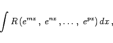
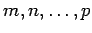
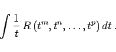

Inhalt Index DeskTop Bronstein

 Integralrechnung Unbestimmtes Integral Integration weiterer transzendenter Funktionen
Integralrechnung Unbestimmtes Integral Integration weiterer transzendenter Funktionen


Integrale mit Exponentialfunktionen können in Integrale mit rationalen Funktionen im Integranden überführt werden, wenn sie in der Form
|  | (8.34a) |
gegeben sind, wobei  rationale Zahlen sind. Dazu sind zwei Substitutionen erforderlich:
|  | (8.34b) |